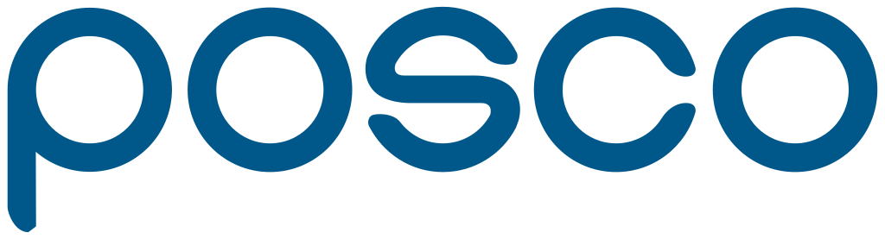
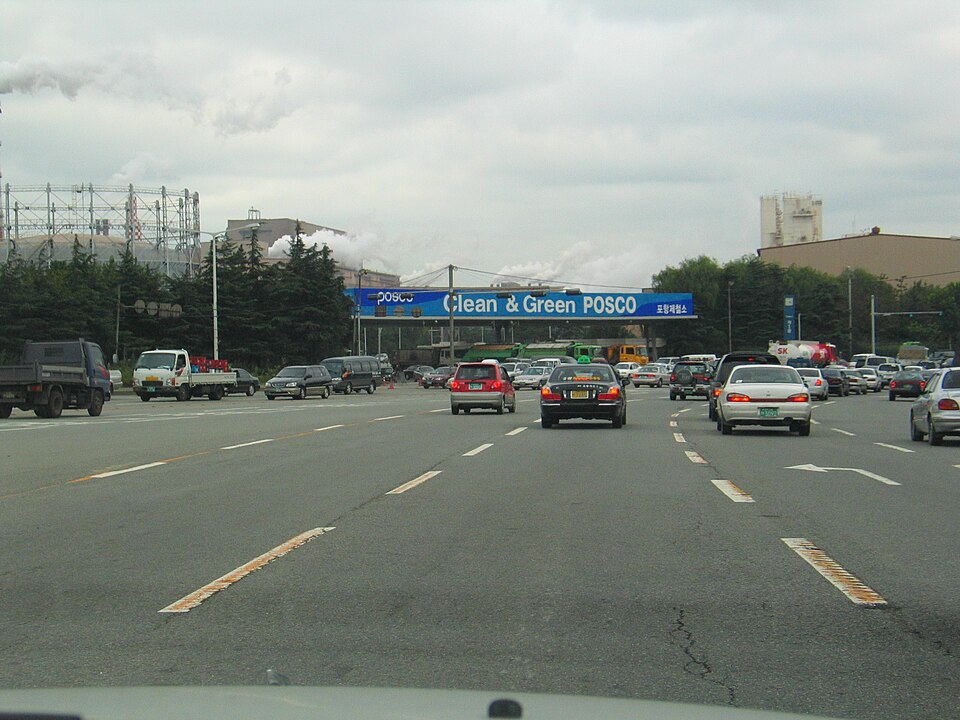

설립연도
1968년

1968년 국영 기업으로 출발한 포항종합제철(포스코)이 2022년 지주회사로 바뀌면서 생긴 회사예요. 포항·광양 제철소를 가진 철강 회사 포스코를 중심으로, 리튬·니켈·양극재 같은 이차전지 소재와 무역·건설(포스코인터내셔널·포스코이앤씨) 회사를 거느리고 있어요. 2025년 매출은 약 69조 원이었어요.
칸에 마우스를 올리거나 누르면 자세한 설명을 볼 수 있어요.

자회사 포스코가 포항·광양 제철소에서 자동차·조선·가전용 철강을 만들어요. 그룹 매출과 이익의 중심이에요.
대표 예자동차 강판, 후판, 전기강판
아르헨티나 염호에서 뽑은 리튬, 니켈과 포스코퓨처엠의 양극재·음극재처럼 전기차 배터리에 들어가는 소재를 만들어요.
대표 예리튬, 니켈, 양극재, 음극재
포스코인터내셔널이 철강·식량 무역과 LNG(액화천연가스) 개발·발전 사업을 해요.
대표 예무역, LNG, 발전
포스코이앤씨가 아파트·플랜트·도로 같은 건설 사업을 해요.
대표 예아파트, 플랜트, 인프라
| 기간 | 매출 | 영업이익 | 순이익 |
|---|
사업마다 겨루는 상대가 달라요